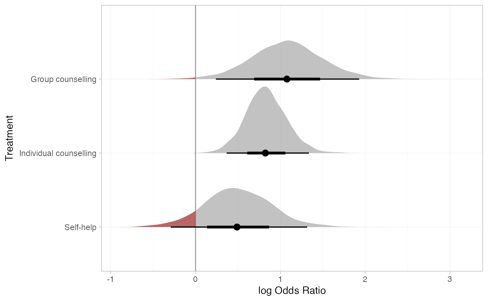

The plot method for nma_summary objects is used to produce plots of
parameter estimates (when called on a stan_nma object or its summary),
relative effects (when called on the output of relative_effects()),
absolute predictions (when called on the output of predict.stan_nma()),
posterior ranks and rank probabilities (when called on the output of
posterior_ranks() or posterior_rank_probs()).
# S3 method for nma_summary plot( x, ..., stat = "pointinterval", orientation = c("horizontal", "vertical", "y", "x"), ref_line = NA_real_ ) # S3 method for nma_parameter_summary plot( x, ..., stat = "pointinterval", orientation = c("horizontal", "vertical", "y", "x"), ref_line = NA_real_ ) # S3 method for nma_rank_probs plot(x, ...)
Arguments
| x | A |
|---|---|
| ... | Additional arguments passed on to the underlying |
| stat | Character string specifying the |
| orientation | Whether the |
| ref_line | Numeric vector of positions for reference lines, by default no reference lines are drawn |
Value
A ggplot object.
Details
Plotting is handled by ggplot2 and the stats and geoms provided in
the ggdist package. As a result, the output is very flexible. Any
plotting stats provided by ggdist may be used, via the argument
stat. The default uses
ggdist::stat_pointinterval(), to
produce medians and 95% Credible Intervals with 66% inner bands.
Additional arguments in ... are passed to the ggdist stat, to
customise the output. For example, to produce means and Credible Intervals,
specify point_interval = mean_qi. To produce an 80% Credible Interval
with no inner band, specify .width = c(0, 0.8).
Alternative stats can be specified to produce different summaries. For
example, specify stat = "[half]eye" to produce (half) eye plots, or stat = "histinterval" to produce histograms with intervals.
A full list of options and examples is found in the ggdist vignette
vignette("slabinterval", package = "ggdist").
A ggplot object is returned which can be further modified through the
usual ggplot2 functions to add further aesthetics, geoms, themes, etc.
Examples
## Smoking cessation # \donttest{ # Run smoking RE NMA example if not already available if (!exists("smk_fit_RE")) example("example_smk_re") # } # \donttest{ # Produce relative effects smk_releff_RE <- relative_effects(smk_fit_RE) plot(smk_releff_RE, ref_line = 0)# Further customisation is possible with ggplot commands plot(smk_releff_RE, ref_line = 0, stat = "halfeye", slab_alpha = 0.6) + ggplot2::aes(slab_fill = ifelse(..x.. < 0, "darkred", "grey60"))# Produce posterior ranks smk_rank_RE <- posterior_ranks(smk_fit_RE, lower_better = FALSE) plot(smk_rank_RE)# Produce rank probabilities smk_rankprob_RE <- posterior_rank_probs(smk_fit_RE, lower_better = FALSE) plot(smk_rankprob_RE)# Produce cumulative rank probabilities smk_cumrankprob_RE <- posterior_rank_probs(smk_fit_RE, lower_better = FALSE, cumulative = TRUE) plot(smk_cumrankprob_RE)# Further customisation is possible with ggplot commands plot(smk_cumrankprob_RE) + ggplot2::facet_null() + ggplot2::aes(colour = Treatment)# }